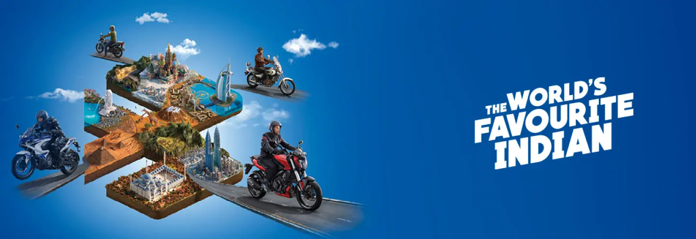
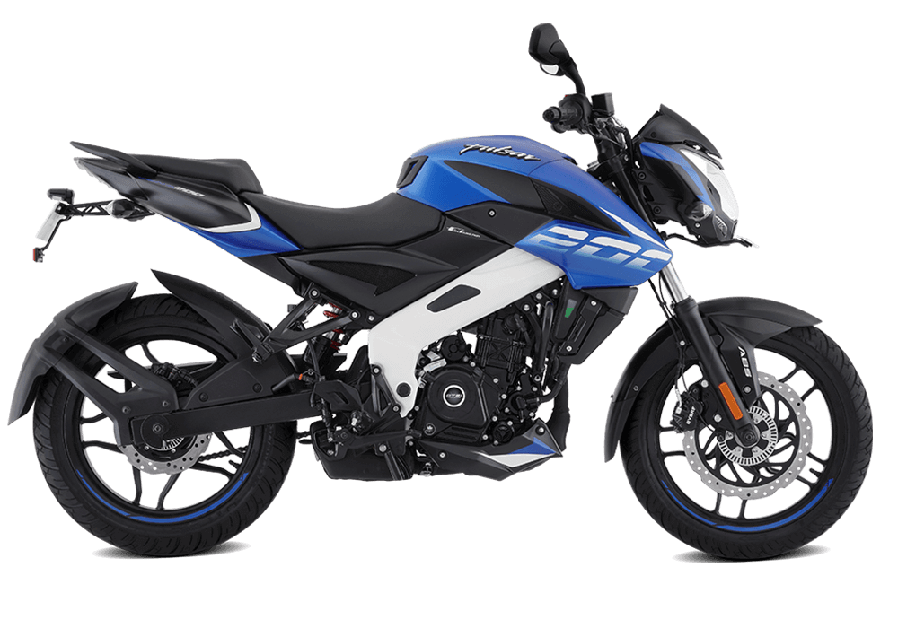
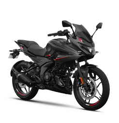
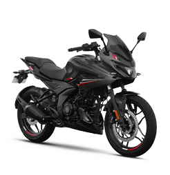

The Bajaj Sports Bikes
The Bajaj Pulsar is an iconic Indian motorcycle. Since its inception, the Pulsar created a new segment called ‘Sports Biking’ in Indian motorcycling and redefined motorcycle riding for the Indian youth. Presently, the cutting-edge Bajaj Pulsar specifications are 125-250 cc engines, front and rear disc brakes, nitrox-mono-shock suspension, tubeless tyres, among others. Today, the Pulsar motorcycle is a perfect combinati on of style and performance. The Bajaj Pulsar features projector headlamps, ABS, fuel-injection systems, and a DTS-i engine. Pulsar 250 & Pulsar N160 are the latest addition to the Pulsar range.

 
More About NS-200...
More About RS-200...
More About F-250...

More About NS-200...
More About RS-200...
More About F-250...
A true biker knows that AWESOME feeling when you leave the world behind, but still catch all the stares when you ride an ultimate sports bike. Bajaj motorcycles have it all with a monster list of the best sports bikes in India. Stay tuned for upcoming sports bikes in 2021 by simply following us on our social pages! Bajaj bikes are always amongst the top 10 sports bikes in India. Visit your nearest Bajaj dealership and turn that dream to own the best mileage sports bike in India, into reality.